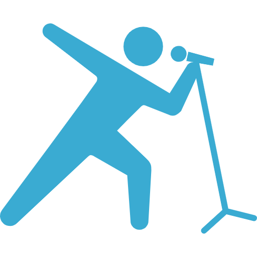
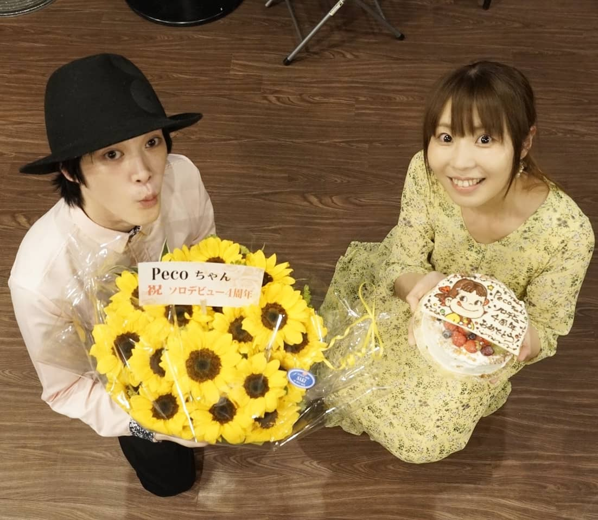

News
Profile
SINGLE

Twicas
Schedule
お仕事依頼
Twitter
Facebook
YouTube
News
Profile
Single
Twicas
Schedule

ツイート
ツイキャス / YouTube
スケジュール
Tweets by AtsushiKubota
ライブ クボタアツシ ツイキャス #620977653
ライブ クボタアツシ ツイキャス #619165023
ライブ クボタアツシ ツイキャス #619158873aaaaaaaaaaaaaaaaaaaaaaaaaaaaaaaaaaaaaaaaaaaaaaaaaaaaaaaaaaaaaaaaaaaaaaaaaaaaaaa
ライブ クボタアツシ ツイキャス #618742646
ライブ クボタアツシ ツイキャス #600233038aaaaaaaaaaaaa
ライブ クボタアツシ ツイキャス #600223963
ライブ クボタアツシ ツイキャス #600223963
ライブ クボタアツシ ツイキャス #600223963
ライブ クボタアツシ ツイキャス #600223963
ライブ クボタアツシ ツイキャス #600223963
ライブ クボタアツシ ツイキャス #600223963
ライブ クボタアツシ ツイキャス #600223963
ライブ クボタアツシ ツイキャス #600223963
ライブ クボタアツシ ツイキャス #600223963aaa
ライブ クボタアツシ ツイキャス #600223963
ライブ クボタアツシ ツイキャス #600223963
ライブ クボタアツシ ツイキャス #600223963
兵庫県豊岡市出身。
Acoustic Guitarist あなたの心に響く音楽を。
毎月第三水曜日に「7's code」という定期ワンマンライブを神戸で開催！
フィンガーピッキングコンテスト2010全国大会で優秀賞受賞。